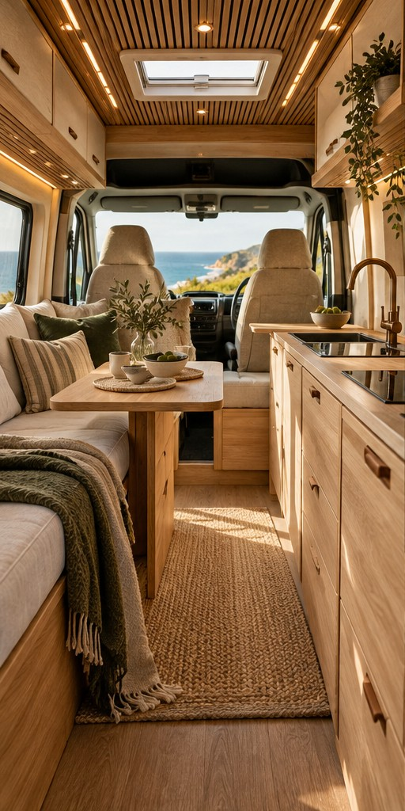
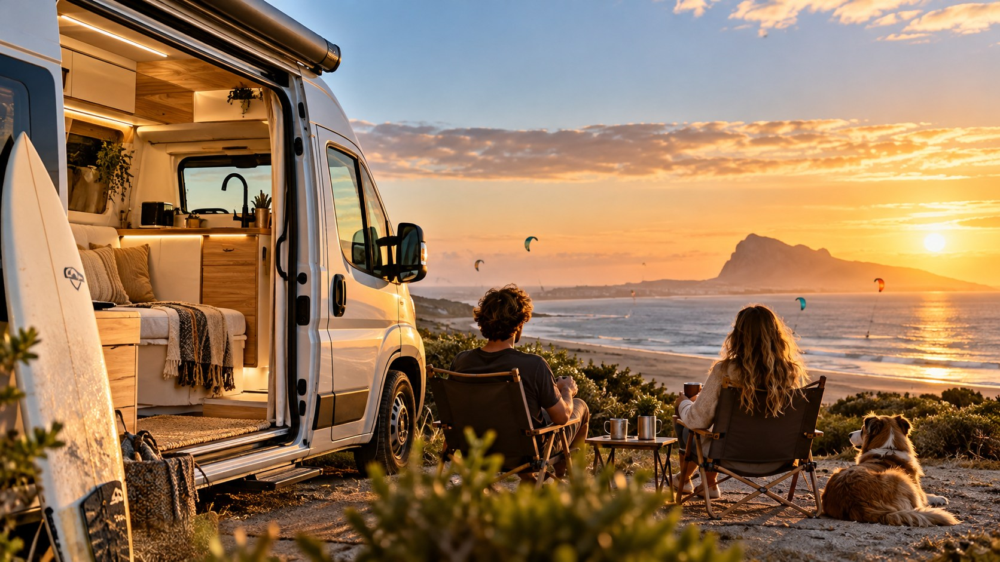
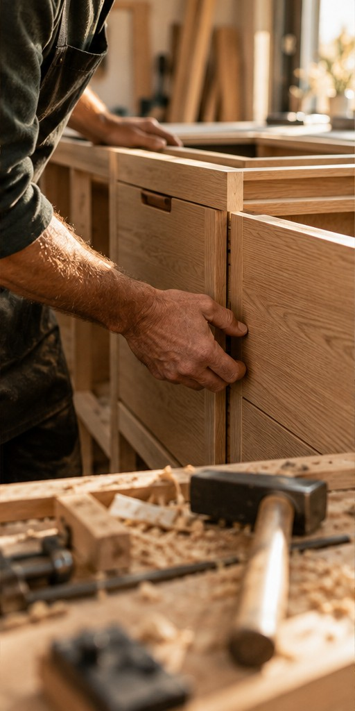

01 / DISEÑO
Espacio para tu vida.
Distribución, descanso y almacenamiento según tus necesidades.

Diseñamos y transformamos tu camper en Tarifa.
Podemos recoger tu vehículo y entregártelo terminado.
RECOGIDA Y ENTREGA A DOMICILIO
Tú eliges la camper. Nosotros acortamos la distancia.
Solicita la recogida de tu vehículo en tu domicilio. El equipo de Jalo coordina la fecha, documenta la recepción y traslada el vehículo hasta el taller de Tarifa. Cuando el proyecto esté terminado, también puede coordinarse la entrega.
Servicio propuesto. Disponibilidad, cobertura y condiciones sujetas a confirmación.
EL VIAJE EMPIEZA MUCHO ANTES DE ARRANCAR
Tu manera de viajar tiene su propio ritmo.
El espacio en el que vives también debería tenerlo.

Distribución, descanso y almacenamiento según tus necesidades.

Carpintería y trabajo de taller para dar forma a tu proyecto.
Cuéntanos qué necesitas. El equipo te ayuda a concretarlo.
Imágenes de inspiración. Los trabajos reales pueden consultarse en nuestras redes.
EL TALLER, SIN FILTROS
PASO A PASO, CONTIGO
Tu vehículo, tus necesidades y tu manera de viajar.
Una propuesta orientativa revisada por el equipo.
Avances y fotografías para seguir el trabajo.
Revisión, documentación y coordinación de entrega.
CERCA, ESTÉS DONDE ESTÉS
Un espacio personal con las etapas de tu proyecto, fotografías, documentos y las decisiones que necesiten tu aprobación.
Etapa: mobiliario
Último avance · Nueva foto disponible
LA CONFIANZA SE GANA EN CADA TRABAJO
Consulta las opiniones de Jalo Camper en Google. En la versión final, este espacio reunirá reseñas verificadas y experiencias de proyectos reales.
Consultar opiniones ↗EL OFICIO TAMBIÉN VIAJA
Si tu especialidad es la carpintería, electricidad o soldadura, nos gustaría conocerte.
ANTES DE PONERSE EN MARCHA
Cuéntanos qué vehículo tienes y qué necesitas. El equipo revisa la información antes de enviarte una propuesta.
La propuesta incluye un área cliente con hitos, fotografías y documentos. Puedes explorar su demostración desde el menú.
Este servicio está incluido en la propuesta. La disponibilidad, cobertura y coste se concretan con el taller.
Depende del vehículo y del alcance. El equipo debe valorar el proyecto; aquí no se publican tarifas o plazos sin confirmar.
TU SIGUIENTE HISTORIA EMPIEZA AQUÍ